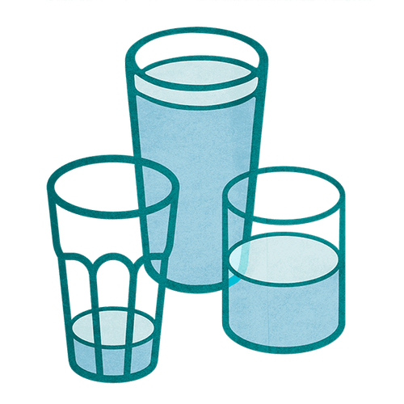

Mit der Academy erhaltet ihr im Business-Plan praxisnahe Lernmodule rund um Facilitation und wirksame Transformation.
Gemeinsam mit 9 Spaces zeigt Plan International Deutschland, wie wertebasiertes Arbeiten Orientierung gibt – nach innen wie nach außen.

Ein Tool, mit dem du reflektieren kannst, welche Bedürfnisse bei dir gerade (nicht) erfüllt sind.
Ein Tool, das dir dabei hilft, zu reflektieren, wie du kommunizierst
Dieses Tool gibt euch einen Rahmen, um Reibungen und Konflikte frühzeitig anzusprechen und aus der Welt zu schaffen.
Um gut mit anderen arbeiten zu können, ist es wichtig, sich immer besser selbst kennenzulernen.